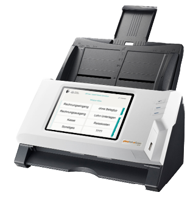
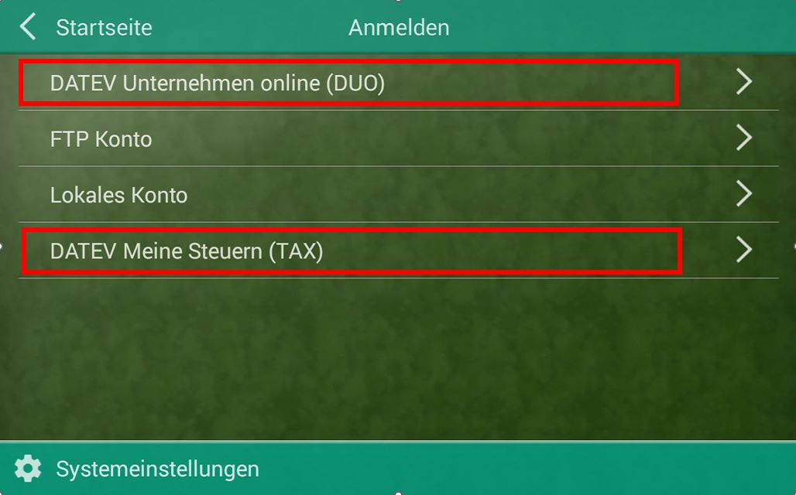
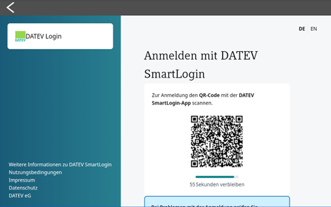
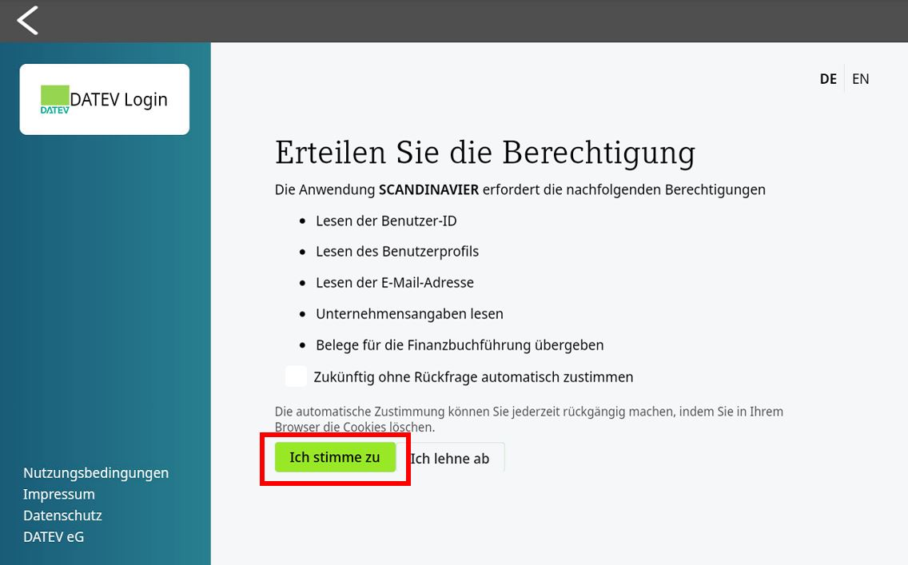
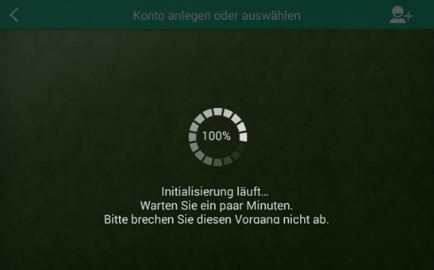
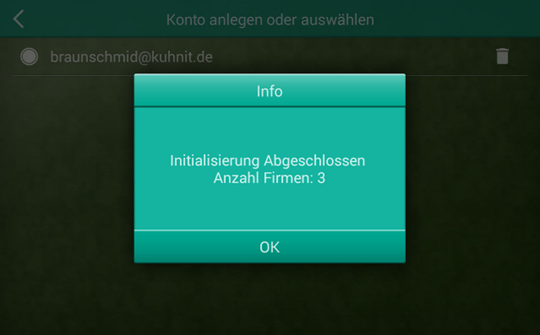
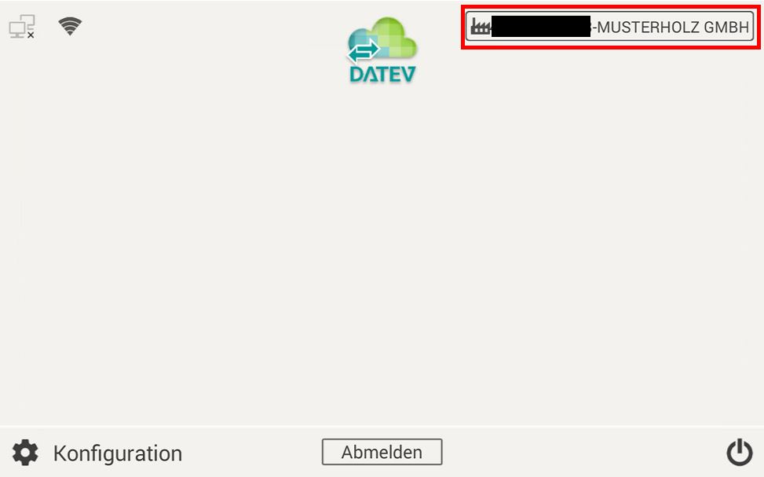
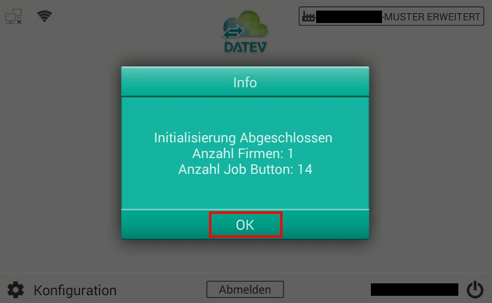

Sprache
Deutsch wählen
Sprache
Deutsch wählen
Schritte 8 · Erster Start
DATEV SmartLogin & DUO
Scan Simplex & Duplex

Auspacken · Verbinden
Dann DATEV und loslegen
Sprache
Deutsch wählen
 DATEV
Bestand synchronisieren
DATEV
Bestand synchronisieren
Der erste Start
Schritt für Schritt mit Screenshots
Wir haben für Sie die einfache Konfiguration in einzelne Schritte unterteilt und mittels Screenshots dargestellt.
-
Schalten Sie ihr Gerät ein und wählen die Sprache (Deutsch). Gerät startet neu.
-
Verbinden Sie den Scanner mit dem Netzwerk (LAN/WLAN)
-
Synchronisieren Sie Ihren DATEV Unternehmen online – Bestand (DATEV Unternehmen online (DUO) und/oder DATEV Meine Steuern (TAX)*)

*DATEV Meine Steuern nicht mit SCANDINAVIER classic (eScan A280) möglich!
-
Melden Sie sich mit Ihrem DATEV SmartLogin Zugang an.

* Für die Authentifizierung muss DATEV SmartLogin verwendet werden.
Der Einsatz von einem DATEV mIDentity Stick oder DATEV SmartCard Leser ist in Verbindung mit dem SCANDINAVIER nicht möglich.
DATEV SmartLogin ist kostenlos im DATEV Shop bestellbar.
Weitere Infos finden Sie unter: DATEV SmartLogin -
Bestätigen Sie den DATEV Hinweis.


-
Bestätigen Sie die Meldung mit „OK“.

-
Durch die Funktion der „Live-Kategorien“, werden die Scan Job-Buttons erst mit der aktiven Auswahl des Unternehmens angelegt. Tippen Sie dazu oben rechts in das Feld mit dem Fabrik-Symbol!

Wählen Sie ein Unternehmen, Belegtypen werden dann Synchronisiert.

Tippen Sie auf „OK“.

-
Nun können Sie die ersten Belege nach DATEV Unternehmen online „hochladen“. Viel Spaß mit Ihrem neuen SCANDINAVIER. Tipp: Wie Sie Ihr Kanzlei Logo verwenden zeigen wir hier.
 Wichtig: Bitte ändern Sie die erzeugten Schaltflächen nicht manuell ab.
Wichtig: Bitte ändern Sie die erzeugten Schaltflächen nicht manuell ab.
Der SCANDINAVIER ist so konzipiert, dass keine händische Nachbearbeitung der Schaltflächen notwendig ist.
Sollten Sie Ihre Benennung der Belegtypen ändern bzw. umbenennen, so muss dies in DATEV Unternehmen online erfolgen. Siehe hierfür DATEV Dokument 1071483. Wenn nun am SCANDINAVIER ein Belegtyp gewählt wird der umbenannt wurde, werden alle Belegtypen für dieses Unternehmen neu Synchronisiert!
Ihr erster Scan
Nach erfolgter Einrichtung kann es nun auch schon los gehen mit den ersten Scans.
Im folgenden zeigen wir, wie einfach das Scannen mit dem SCANDINAVIER funktioniert und erklären den Unterschied und die Funktionsweise beim Simplex- und Duplex-Scanvorgang.
Anschlussmöglichkeiten
Netzwerk. WLAN. USB. Hotspot.
Wählen Sie den Standort und Ihren optimalen Anschluss für Ihren SCANDINAVIER selbst. Das Gerät verfügt über folgende Anschlußoptionen:
Netzwerk
Installieren Sie Ihren SCANDINAVIER in Ihrem Firmennetzwerk oder direkt an jedem weiteren Netzwerk.
empfohlene Anschlussmethode
WLAN
Installieren Sie Ihren SCANDINAVIER an Ihrem vorhandenen WLAN Router. Flexibler Einsatz ohne Kabel.
wenn kein Netzwerk verfügbar ist
USB
Installieren Sie Ihren SCANDINAVIER über USB Kabel. So können Sie ihn auch für weitere Aufgaben nutzen.
für weitere Scan-Aufgaben
Hot Spot
Installieren Sie Ihren SCANDINAVIER über Ihren Handy-Hotspot. So ist er schnell einsatzbereit im Außendienst.
z. B. für den Außendienst Einsatz
Support
Hier finden Sie online Unterstützung und Kurzanleitungen
Filtern Sie nach Bereich oder nutzen Sie die Suche. Die Anleitungen öffnen sich hier auf der Seite.
Keine Anleitung passt zu dieser Suche.
Neue Funktion
Seitentrennung
Direkt am Display – mehr im Support-Artikel.